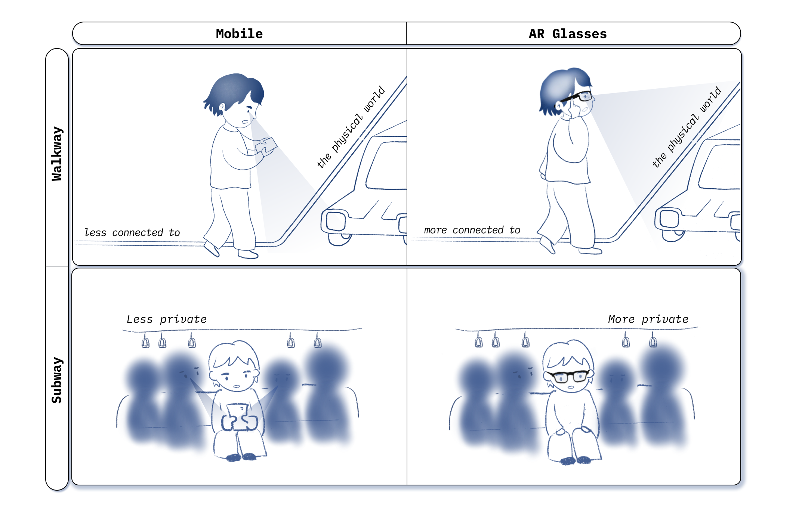

TouchEmotion
Overview
This project represents a comprehensive design research endeavor, encompassing the entire process of research, conceptualization, prototyping, and user testing. I have developed three AR experiences — Lotus, Fire, and Bubble — tailored to regulate anxiety, anger, and boredom, respectively. Through metaphorical mappings of emotional trajectories—such as blooming the lotus, extinguishing the fire, and popping the bubbles—this project aims to facilitate experiential emotional change. At the surface layer, the design employs interactive emotional trajectories to guide users from less ideal to ideal emotional states. On a deeper level, through the interactive experiences, I strive to convey messages about feeling your body and mind, accepting uncontrollable situations, and maintaining curiosity while cherishing moments of serendipity.
Background
Emotions can fluctuate unpredictably, underscoring the need for immediate, spatially unbound mechanisms for emotional regulation. The compact, mobile nature of devices such as smartphones and on-body wristwear (e.g., Apple Watch) positions them as go-to tools for accessing such emotional support. With the advent and potential integration of portable AR eyewear into our daily lives—examples include Google Glass, Snap Spectacles, and the nascent Apple Vision Pro—AR glasses emerge as a compelling medium for instant emotion regulation. First, they facilitate a greater connection with the surroundings by blending virtual elements into reality through a heads-up display and overlay graphics; second, they offer more privacy with their private-view display.
 Device
Exploration
We are given Snap's AR glasses, spectacles to explore. I spent several weeks to try it out, play with templates and be familiar with Spectacles' functionalities. The Spectacles lack hand-tracking features. Inputs are received through either the touchpad or voice recognition. The glasses support plane detection; both 2D and 3D assets, shader graphs, and audio assets can be rendered via Lens Studio, Snap's internal development tools.
Short and timely audio visual experience: Matching the Spectacles' feature of being portable and lightweight, it would be beneficial to craft a short and timely emotion regulation experience (2-3 minutes), similar to a short calming reel, but interactive.
Touch Input: By making use of the touchpad, How can we design touch interactions that guide users' finger movements for emotion regulation, integrating audio-visual elements?
Concept |
Lotus,
Fire,
and Bubble
Concept-wise, according to cognitive linguistics as stated in 'Metaphor We Live By', metaphors not only reflect our thoughts but also help us understand abstract concepts and have the potential to lead us to new ways of thinking, possibly transforming our mindset. Then, how should we think about our abstract emotions in a metaphorical way? In psychotherapy practice, therapists have been using metaphors to verbally help people understand and move toward more ideal states. Inspired by this, I decided to explore the design of metaphorical experiences that could guide users from less ideal emotional states to more ideal ones in the form of interactive audio-visual experiences. In this prototype, I focus on three common negative feelings in daily life: anxiety, anger, and boredom, exploring how to translate them into a metaphorical emotional journey. Here, I started with a fundamental metaphor concept, which has shown its effectiveness in verbal formats for regulating certain emotions. Then, I translated them into visual and auditory representations. Lastly, I designed interactions to combine these representations into an engaging experience.

The lotus is a common metaphor used in mindfulness practices (such as yoga and meditation), where an opening lotus usually represents mindfulness, and slowness is one approach to achieving calm. Here, I've mapped an opened lotus to represent an ideal calm state, while a closed lotus symbolizes an anxious state. By guiding users' continuous slow finger movements, the lotus will open; otherwise, if users move too quickly or stop, the lotus will close again. This design aims to encourage users to be introspective about their movements and feelings.

Studies in cognitive linguistics have shown that the metaphor anger is fire is widespread across different cultures, suggesting it could be considered a sort of universal metaphor for conceptualizing anger. If anger can be metaphorically represented by fire, could a fire extinguishing experience help in regulating anger?

Boredom is both permanent and temporary. If boredom is prevalent and inevitable, then learning how to live with boredom and finding interesting aspects' in mundane objects becomes essential. Here, I have designed an element of surprise by randomly triggering fireworks when popping the bubbles. Only two out of six bubbles will pop with fireworks, which might lead users to speculate about which one will offer the next surprise. By experiencing that, I hope to convey the message that what may seem like boring bubbles could actually be filled with surprises if we pay close attention.
Implementation
Three lenses
The final prototypes of the three lenses - lotus, fire, and bubble - are shown below:


The lotus is made in blender, and exported into LensStudio; the fire and bubble is made in LensStudio with its Shader Graph Nodes. All the sound and music are composed and produced in Logic Pro X. During the prototype, I also encountered some challenges.
Challenge 1: How to manipulate the flower blooming and shrinking real-time with finger touch
During the prototype phase, one challenge that occurred is that Lens Studio doesn’t support granular manipulation of animations (such as animation speed, playing forward or backward, etc.) during runtime. This limitation means I cannot adjust the flower's blooming or shrinking behaviors in response to the dynamics of finger movement (whether continuous or stopped, slow or fast). In other words, if I touch the touchpad once, the whole animation will play out; for example, the lotus will fully bloom, even if my fingers leave the touchpad or stop moving after triggering the animation. What I need is control over the granular mapping between finger movement and each frame of the animation. To resolve this, I manually wrote playing and reverse-playing functions by inputting the image sequences for my animation with an API function that loads the images from the assets folder at runtime.
Challenge 2: Random bubble selection and Random Fireworks selection
My design tried to implement randomness in popping the bubble. Initially, six bubbles will show up and within these six bubbles, one of them will be marked randomly to let users pop. In the beginning of each round of the bubble-generation, I generated the order for these bubbles. Then I searched online for “how to get an array with elements in random order”, and one post showed the shuffle method. I thought it was a good idea. I have five bubbles colored as red, orange, pink, blue, green, and purple, which I assigned the numbers 1, 2, 3, 4, 5, 6. Then I define my initial array of [1,2,3,4,5,6] as the initial order of my bubble popping sequence – in this case, the red, orange, pink, blue, green, and purple will be prompted to be popped by a marked circle outside each bubble for users to pop. Then I can use the shuffle function to randomize the popping order.
After generating the random order of bubble popping sequence, for example, array = [2,1,5,4,3,6], I will use the select two numbers in the range of 0 to 5 as the index (for example, I got 2 and 4), and then array [2] (5, which means the purple one) and array[4] (3, which means the pink one ) will be the bubble to trigger the fireworks. The following Figure shows how these two aspects of randomness were generated.
Reflection
from
Users
Overall, we gathered that users found the metaphorical emotional experience to be introspective. They tended to project their emotions onto the metaphorical representations in these lenses. One user shared, 'I’m aware that the fire felt like a symbolic representation to me... I found myself concentrating... it was as if my anger was the fire' (P2). Another mentioned, 'Seeing the lotus flower and the circle around it made me realize that I was being physically impatient' (P11).
Inevitably, the audio-visual metaphors have the power to convey metaphorical meaning, but the intentionally desigend interaction also provides a channel that invites users to experientially feel such emotions during the interaction process. For instance, with the Fire lens, when the fire was difficult to control ('It was different from what I expected. I wanted more control, but I didn’t have it'), users gradually learned to accept their anger: 'I was like, instead of getting angry, [I would say] Okay, it’s fine' (P2).
During the design process, selecting a metaphorical concept and embedding interaction to enact the meanings is a way to be expressive.